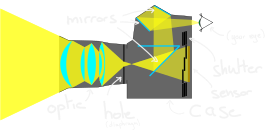

Photography
the technical aspect
@fredszaq
- 25/04/2019
What's a camera?
Camera settings
Troubleshooting
What's a camera?
Camera osbcura (antiquity)
Nicephor Niepse

TODO modern reflex Optic/hole/shutter/ photo sensible surface Need to see what you take => add 2 mirrors
Camera settings
Optics
focal length
Troubleshooting